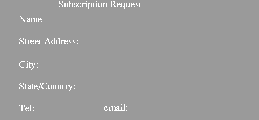

Next: About this document Up: ANKUR Previous: Conclusion
ADOPT A STUDENT PROJECT
PURPOSE: Vanavasi Kalyan Ashram, Sundergarh, Orissa runs hostels for poor girls and boys, whose parents are unable to afford their education and well-being. This project aims to help these poor students in their education to give them an opportunity to seek a career and enable them to promote the well-being of their family, neighbors and fellow villagers.
OUTLINE: The project will involve donors who are willing to sponsor the living and educational cost of a student. Though the Ashram will spend the donor's money on the student, sponsors can correspond directly with the student. They can also visit their students at their own will. A detailed account of the expenditure will be maintained by the Ashram. There will be no involvement of Govt. officials, and village bureaucrats in the entire process.
COST: Sponsoring a student would cost about $9/month or $108/year ( Rs.3800/year)., which will include Rs.3000 (Food), Rs.400 (Clothes), Rs.250 (Books,Paper), Rs.150 (Misc.). The contribution is U.S tax-deductible and will go a long way to help a poor student from the backward parts of Orissa.
ROLE of SEEDS: Though SEEDS will not be directly invloved in the project, it will be a medium between the sponsor and the Ashram which will directly supervise the student's upbringing. SEEDS will try to organize sponsorship for the project and keep the process going.
CONTACT: Interested sponsors can contact SEEDS for more information. Contact Gopal Mohapatra, the coordinator of this project, at (520)629-9890, or via e-mail (gkm@geo.arizona.edu).
If you are interested in receiving Ankur regularly, please use/click the subscription form below. Rates are $ 10/- annually or $ 50/- for life.

SEEDS,Postage
c/o Dr. P. Patra, 15852 NW West
Union Rd., #129, Portland, OR 97229.
Priyadarsan Patra Fri May 31 13:07:59 CDT 1996